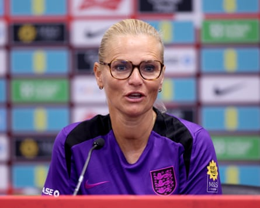

Lauren James could feature as a substitute in Sunday’s friendly against Jamaica at the King Power Stadium as England continue to carefully manage the forward’s return to fitness for the Women’s Euros.
James has not played since suffering a hamstring injury during England’s victory over Belgium at Ashton Gate in April, but is on track with her recovery, with the Lionesses increasingly optimistic she can make a big impact for the defending champions in Switzerland.
Sarina Wiegman said: “She’s doing really well, but she hasn’t played games yet. She’s in a good place. She will likely come off the bench, we can manage that a bit. She showed up in the training session[s] really well.
“This is the first time in a while that she’s coming into a game and [she needs to] get through that. Then we’ll take it from there towards the tournament.”
The England defender Jess Carter, a former teammate of James at Chelsea, said: “It’s really exciting seeing LJ back. We all know she is an incredible footballer, but the most impressive thing for me is that she has come back in like a new player.
“Maybe the injury was a bit of a blessing in disguise – she looks so fresh, so sharp, and she really impacts the game and the team. She is a pain to play against. Good luck having to play against her in the tournament.”
Wiegman confirmed that all her squad is available to play 90 minutes against Jamaica, including Georgia Stanway, who returned from a knee injury at the end of May.
England face France on 5 July in their Group D opener in Zurich, before meetings with the Netherlands and Wales in a tough group.
‘We are aware that our group is really, really tough with incredible teams in it,’ says the England manager, Sarina Wiegman.Photograph: Nigel French/PA
On Friday, the FA’s chief executive, Mark Bullingham, said Wiegman’s job was safe regardless of whether England were knocked out of the Euros at the group stage. The manager said: “We’re going into a new tournament now and I feel very happy here. I’m excited. I’m not looking too much ahead. The contract is until 2027 and I’ve always felt so much support from Mark and the board. I still feel that way.
“We are convinced we can do really well. We are aware that our group is really, really tough with incredible teams in it. But we are going to do everything to get out of that group stage and do really well in the tournament again.”